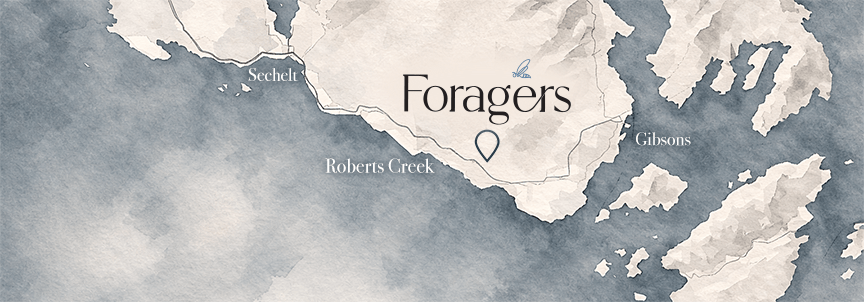

Join us above the orchard on the Sunshine Coast
Foragers is located in Roberts Creek on the Sunshine Coast of British Columbia, nestled between forest and sea. We look forward to welcoming you.
Here on the Coast
Where forest, orchard and table meet
Foragers
Parking & access
Ample on-site parking is available. Please note as you leave the Sunshine Coast Highway, that Leek Road is narrow; we encourage slow and mindful driving upon approach.
Two accessible parking stalls are located near the entrance.


Tasting Room
Guided flights, bottles to take home and estate honey to browse
Guests are invited to enjoy guided tasting flights of our current mead releases, explore bottles to take home and browse estate honey and select in-house offerings.
Complimentary tastes of our current mead expressions are available upon request.
Guests must be 19 years of age or older for tastings and may be asked to present two pieces of valid identification.
Dining Environment
A space crafted for conversation, presence and shared meals
Foragers is designed as an adult dining experience.
As a licensed alcohol manufacturing facility, our dining lounge and patio welcome guests 19 years and older. The space is crafted for conversation, presence, and shared meals in a calm setting.
We hope you appreciate an environment where guests are encouraged to slow down and connect, to the table and to one another.
Public WiFi is not available.
Accessibility & Guest Guidelines
A welcoming environment for all guests
We aim to create a welcoming environment for all guests.
- Two accessible parking stalls are located on-site.
- Service animals are welcome inside the dining lounge and on the patio.
- Pets must remain outside dining areas and on a short leash at all times.
- Smoking and vaping are not permitted anywhere on the property.
Foragers is a working agricultural property. Our orchard is protected by electric fencing, please observe all posted signage. This is also an active apiary. Bees move freely throughout the grounds. Guests with severe bee allergies should plan accordingly.
Enjoying the Grounds
Move thoughtfully through an active working estate
Guests are welcome to enjoy the upper landing and designated outdoor areas, even without dining.
We ask that alcohol remain within licensed areas of the property.
Please move thoughtfully through the space, the orchard, hives, and kitchen are all active parts of daily operations.

A Final Note
Tip-free hospitality: rooted in respect for land, craft and one another
Foragers operates as a tip-free establishment. Our team is supported through living wages and a culture of professional hospitality. If gratuities are left, they are donated to a local charity.
We thank you for helping us maintain a space rooted in respect, for land, for craft, and for one another.
We look forward to welcoming you.
Ready to join us?
Secure your table and experience Foragers above the orchard. Reservations are recommended for weekend evenings.